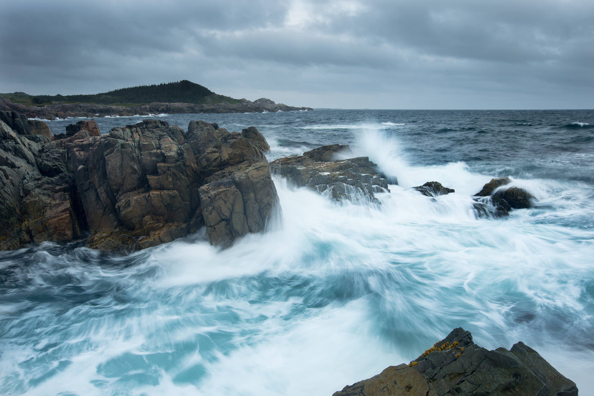

Интересные факты о реках
1. Знали ли вы, что в Атлантический океан впадает больше рек, нежели в Тихий – самый большой на нашей планете? Дело в том, что многие километры вдоль Тихого океана тянутся горы. Поэтому данный океан вбирает лишь 20% суши Земли, а Атлантический и Северный Ледовитый - 53%.
2. Ежегодно около 16 миллиардов тонн камней, обломков и других твердых материалов уносятся речными потоками в моря и океаны. К примеру, если все это загрузить в товарный поезд, получится железнодорожная машина длиной, равной тридцати окружностям Земного шара.
3. На территории Европы и Азии насчитывается 70 рек, длина которых составляет более одной тысячи километров. И 50 из них – протекают в постсоветских странах.
4. Река Урал удивительна тем, что один ее берег – В Европе, а второй – в Азии.
5. Интересные факты о реках касаются и более известных нам водных гигантов. Так, сибирские реки влияют на климат Севера. Он был еще более суровым, если бы реки не несли с собой огромное количество тепла. Если подсчитать, оно равно сжиганию миллиардов тонн топлива.
6. В Индии есть река Коси, которая ежегодно прокладывает для своих вод новое русло. При этом она опустошает все на своем пути – деревни, поля, скотт. Каждый год Коси приносит с собой 116 миллионов тонн глины, песка, гальки с гор Гималаи. Это количество наноса можно было бы загрузить в 8 миллионов вагонов товарного поезда.
 7. Мощным гидроэлектроресурсом считается река Волга. Ее показатели составляют 6,206,20 миллионов киловатт. Не сильно уступает ей Нарын - 5,94 миллионов киловатт.
7. Мощным гидроэлектроресурсом считается река Волга. Ее показатели составляют 6,206,20 миллионов киловатт. Не сильно уступает ей Нарын - 5,94 миллионов киловатт.
8. Одной из самых длинных рек на Земле является африканский Нил. Его длина составляет более шести тысяч километров. Нил протекает в таких странах, как Египет, Бурунди, Судан, Заир, Эфиопия, Руанда, Танзания, Уганда и Кения.
9. Не менее величественной является река Амазонка. В ней воды больше, чем в любой другой реке на Земле. Амазонка начинается в горах Анды (Перу) и впадает в Атлантический океан.
10. Одной из самых чистых рек на нашей планете признан Иртыш – приток Оби.
11. Самая грязная река Европы – Сарно. Ее потоки проходят через город Помпеи и несутся к морю.
12. Самой загрязненной рекой Австралии считается Королевская река. В ее водах – полтора миллиона сульфидов и других химических отходов от активной горнодобывающей деятельности.
13. Ла-Плата – самая широкая река на Земном шаре. Ее ширина – невероятна, и колеблется в разных местах от 48 до 220 километров. Но из-за этого, река является непригодной для судов – слишком мелкая.
14. На втором месте по площади бассейна после Амазонки стоит река Конго. Она же и самая глубокая. Глубина реки Конго в некоторых местах достигает более 230 метров.
15. Самая удивительная река в мире – Кристальная река или Река пяти цветов. В ее водах, практически, нет рыбы. За исключением маленьких рыбок. Но интерес вызывает даже не этот факт. Дело в том, что в Кристальной реке в зависимости от времени года в огромном количестве размножаются водоросли пяти цветов: зеленого, черного, фиолетового, желтого и голубого. Воду из реки нельзя использовать для питья: она как дистиллированная, лишенная солей и минералов.
Источники:
Википедия
Журнал "Интересные факты"